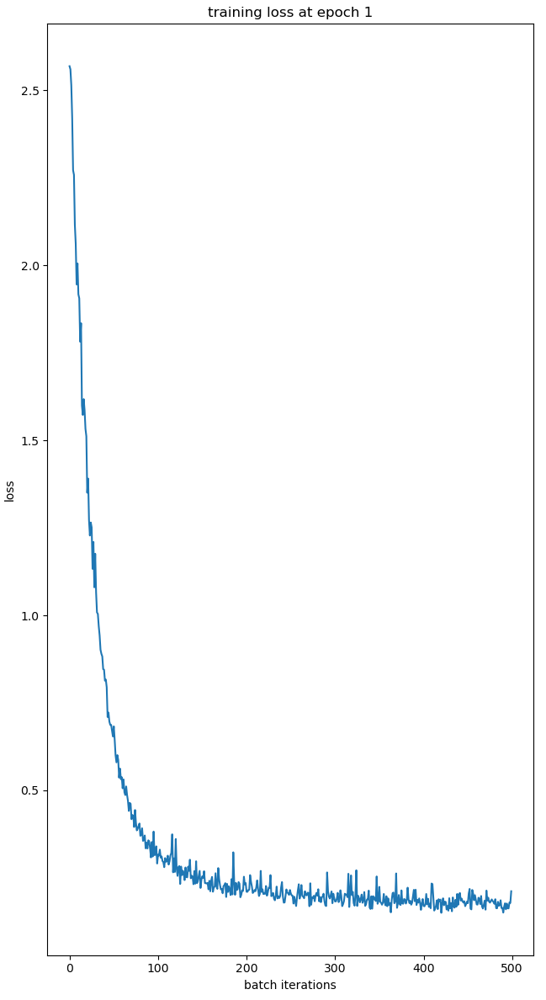

FNOs for Surrogate Modeling
Motivational Example
Given seismic observations of a CO2 plume, can we invert for the underlying permeability distribution?
\(p(K|d) \propto p(d|K)\cdot p(K)\)
\(K\) is our permeability
\(d\) is our seismic observation
Since \(p(d|K)\) is expensive to compute, we train a FNO as a surrogate to offload some of the computation.
Background of Fourier Neural Operators (FNOs)
Learns approximations to the solution operator to parametric PDEs
- Acts on functions in lifted space
- Spectral convolution (i.e learned weighting on low-frequency modes)
Problem
Mapping permeability to time-varying CO2 concentration governed by two-phase flow equations.
| \(n_x \cdot n_y \cdot n_t \cdot n_c\) | samples | modes | sconv blocks |
|---|---|---|---|
| 64 x 64 x 51 x 4 | 1000 | 8 | 4 |
10/4/23
- Trained for 300/500 epochs on the GPU
- The model seems to have stop learning around ~150 epochs
- Objective is \(\frac{norm(y - fno(x))}{norm(y)}\)
- Using AdamW as optimizer
- The weight application is on CPU (using third party library for einsum)
Currently working on
- Debugging Kronecker Distribution
- Moving Einsum Computation to GPU (Currently ~ 4.5 days projected for 500 epochs)
Evaluation
10/13/23
- Fixed Kronecker Distribution Bug
- Made custom operators for Distrbuted Batch Norm, Distributed Weights Application
- Trained serial FNO for 85 epochs
- Mapped the weights to a distributed FNO. Working v1 forward pass
Currently working on
- Gradient for the network
Roadblocks
- No stable Einsum Package for Einsum on GPU
- Einsum : No GPU support
- Tullio.jl : GPU support but last release > 1 year, lots of errors setting up and no runtime contraction order support
- OMEinsum.jl : GPU support and runtime contraction support, failing for our use case on specific GPUs
- Mathias has suggested to open an issue with OMEinsum.jl Devs
Forward Pass DFNO on a 2x2 using CPU
10/18/23
- Added Operators and AD rules for gradient
- Trained DFNO for 2 epochs
Currently working on
- Code Cleanup
- Distributed IO
- GPU support
Trained DFNO on a 2x2 using CPU for 2 epochs
